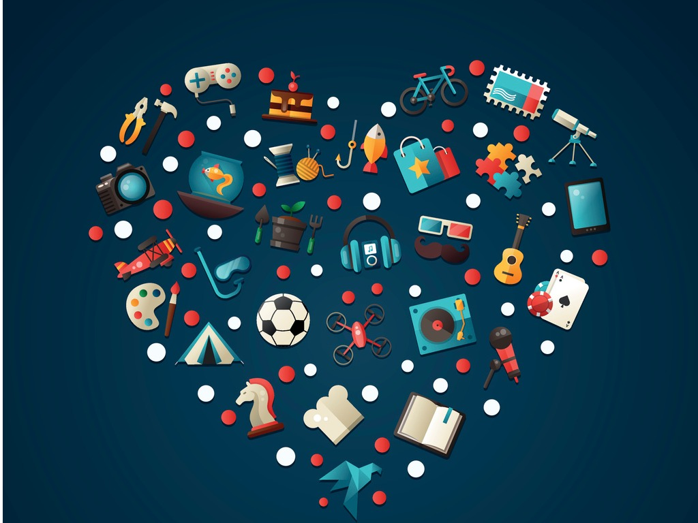

Chi sono
Il mio nome è Lorenzo Bisonni, detto anche Biso e ho 19 anni. Frequento il 5° anno dell'istituto Marconi Pieralisi indirizzo informatica a Jesi. Sono figlio unico di una famiglia molto felice insieme ad una cagnolina bellissima di nome Nanà. Vivo a Jesi, una città che amo per la sua storia e la sua comunità. Fin da piccolo ho mostrato interesse per la tecnologia e i computer, che mi hanno portato a scegliere questo percorso scolastico. Sono appassionato di informatica e spero di costruire una carriera in questo campo.

Background e competenze
Ho frequentato la scuola elementare "Gemma Perchi" costruendo le prime amicizie, e la scuola media "Federico II" dove ho imparato molto su come comportarsi e l'importanza dello studio. Alla scuola superiore finalmente sto studiando ciò che mi appassiona fin da piccolo: l'informatica. Ho imparato molto in questi anni non solo le materie informatiche, ma anche quelle umanistiche e scientifiche. A scuola ho partecipato a progetti di gruppo, sviluppato competenze in programmazione ed imparato la disciplina e dedizione allo studio. Inoltre ho conseguito la patente per la conduzione di carrelli elevatori e quella per autoveicoli con la quale ho acquisito maggiore indipendenza.
Dettagli personali
Anche se a volte non sembra, non mi arrendo mai al primo ostacolo. Quando incontro una difficoltà, cerco tutte le soluzioni possibili e mi metto sempre alla prova. La mia perseveranza e la mia determinazione mi aiutano a superare gli imprevisti e a portare a termine ciò che inizio. Sono una persona affidabile, sempre disponibile ad aiutare gli altri e a collaborare in modo costruttivo. Mi piace imparare ogni giorno qualcosa di nuovo e applicarlo nella pratica, perché credo che la crescita personale passi dall’esperienza. Questa mentalità mi ha permesso di ottenere risultati sia nello studio sia nelle attività extracurriculari, spingendomi a migliorarmi continuamente.

Obiettivi professionali
Vorrei continuare gli studi nel campo dell'informatica, magari specializzandomi in sviluppo web, cybersecurity o intelligenza artificiale. Dopo il diploma, penso di iscrivermi all'università o all’ITS ACADEMY per approfondire le mie conoscenze e acquisire competenze più avanzate. Spero di trovare un lavoro soddisfacente in una azienda tech, dove poter crescere professionalmente e contribuire a progetti innovativi.

Hobby e interessi
Mi appassiona la storia, in particolare quella del ventesimo secolo, che trovo affascinante per i suoi eventi e i suoi protagonisti. Ho anche un forte interesse per le armi da fuoco dal punto di vista teorico e storico, come parte dell’evoluzione militare. Tra le mie passioni principali ci sono i videogiochi, soprattutto strategici, RPG e sparatutto. Nel tempo libero mi piace stare con gli amici, andare al cinema, fare escursioni nella natura.

Punti di forza e di miglioramento
I miei punti di forza sono: affrontare con calma le situazioni difficili, il lavoro in gruppo e la capacità di adattarmi a nuove situazioni. Sono una persona paziente e riflessiva, che pensa prima di agire. Nel lavoro di gruppo, riesco a coordinare bene con gli altri e a contribuire con idee creative. Vorrei approfondire le mie capacità tecniche informatiche, imparando linguaggi di programmazione avanzati e tecnologie emergenti. Inoltre, vorrei migliorare la capacità di gestire i tempi, organizzando meglio il mio studio e le mie attività quotidiane per essere più produttivo.